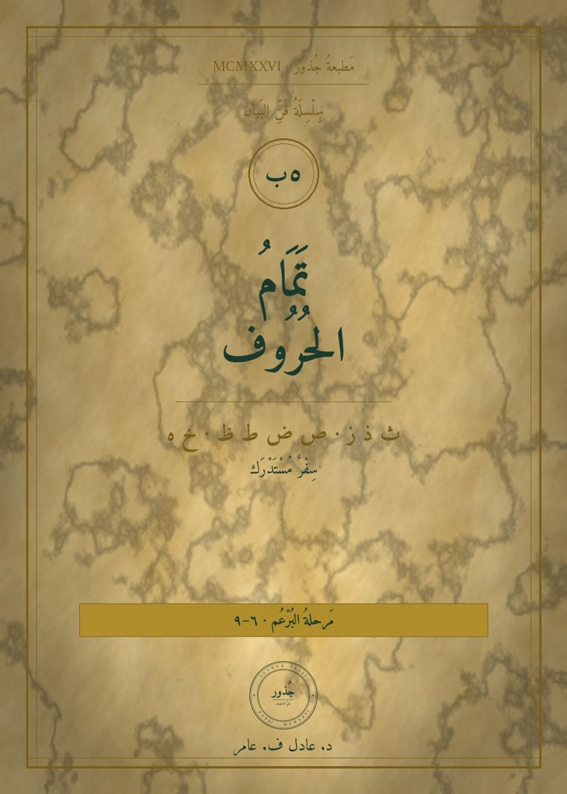
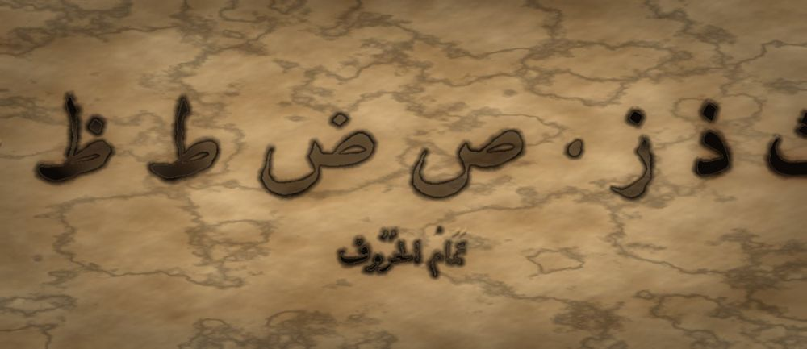

مَطبعةُ جُذور · دبي · MCMXXVI

سِفْرٌ مُسْتَدْرَك · مَرحلةُ البُرْعُم · مَقامُ الأدنى · الفئة ٧–٩
❦ ✦ ❧
سِفْرُ تَمَامِ الحُرُوفِ
ث ذ ز · ص ض ط ظ · خ ه · تِسْعَةٌ تُكمِلُ الهِجَاء

لِمَ هذا السِّفر
كان المنهجُ يقفُ عند تسعةَ عشرَ حرفًا (بالألفِ والواوِ والياء)، فتبقى تسعةٌ لا يعرفُها الطفلُ وهي من أكثرِ ما يَرِدُ في العربيّة. وهذه التسعةُ لا تُدرَّسُ منفردةً، بل كلُّ واحدٍ منها يُقابَلُ بنظيرِه الذي تعلَّمَه من قبل، فيتعلَّمُ الطفلُ الفرقَ لا الحرفَ. وهذا هو مبدأُ الثنائيّاتِ الصُّغرى: لا يُدرَكُ صوتٌ إلّا بضِدِّه.
المَحَطَّات
ث الثَّاء
| المَخْرَج | طَرَفُ اللسانِ بين أطرافِ الثنايا |
|---|---|
| الصِّفَة | مهموسٌ رِخْو |
| الثُّنَائِيُّ الأَصْغَر | تَابَ / ثَابَ · تَمَرٌ / ثَمَرٌ |
المِرْسَاةُ الحِسِّيَّة · أخرِجْ طرَفَ لسانِك قليلًا بين أسنانِك وانفُخْ: «ثثث». ضعْ ورقةً أمامَ فمِك فترى الهواءَ يُحرّكها. الثاءُ لسانٌ يَظهَرُ، والتاءُ لسانٌ يَختفي.
كَلِمَاتٌ · ثَوْبٌ · ثَلْجٌ · مِثْلٌ · حَدِيثٌ
ذ الذَّال
| المَخْرَج | طَرَفُ اللسانِ بين أطرافِ الثنايا · كالثاء |
|---|---|
| الصِّفَة | مجهورٌ رِخْو |
| الثُّنَائِيُّ الأَصْغَر | ثَابَ / ذَابَ · دَرَّ / ذَرَّ |
المِرْسَاةُ الحِسِّيَّة · اللسانُ في موضعِ الثاءِ نفسِه، والكفُّ على الحنجرة: «ثثث» ساكنة، «ذذذ» تهتزّ. موضعٌ واحدٌ وحنجرتانِ مختلفتان.
كَلِمَاتٌ · ذَهَبٌ · ذِئْبٌ · أَخَذَ · لَذِيذٌ
ز الزَّاي
| المَخْرَج | أسَلةُ اللسانِ مع الثنايا · صفيريّ |
|---|---|
| الصِّفَة | مجهورٌ رِخْو |
| الثُّنَائِيُّ الأَصْغَر | سَارَ / زَارَ · سَهْرٌ / زَهْرٌ |
المِرْسَاةُ الحِسِّيَّة · ضعْ كفَّك على حنجرتِك: «سسس» ساكنةٌ لا تهتزّ، و«ززز» تهتزُّ. الحرفانِ من موضعٍ واحدٍ والفرقُ في الحنجرةِ وحدَها.
كَلِمَاتٌ · زَيْتٌ · وَزْنٌ · مَوْزٌ · زَرَعَ
ص الصَّاد
| المَخْرَج | أسَلةُ اللسانِ مع الثنايا · كالسين، مع إطباقٍ |
|---|---|
| الصِّفَة | مهموسٌ رِخْوٌ مُطبَق |
| الثُّنَائِيُّ الأَصْغَر | سَارَ / صَارَ · سَيْفٌ / صَيْفٌ |
المِرْسَاةُ الحِسِّيَّة · قُلْ «سسس» ثم ارفعْ ظهرَ لسانِك نحوَ سقفِ الفمِ وأنت تقولُها فتصيرُ «صصص». الصوتُ يَغلُظُ ويمتلئُ الفم. هذا هو الإطباق: ظهرُ اللسانِ يرتفعُ نحو الحنكِ فيُطبِقُ عليه كالغطاء.
كَلِمَاتٌ · صَيْفٌ · صَبْرٌ · قَصْرٌ · خَاصٌّ
ض الضَّاد
| المَخْرَج | حافّةُ اللسانِ مع ما يليها من الأضراس |
|---|---|
| الصِّفَة | مجهورٌ مُطبَق. عدَّه القدماءُ رِخوًا ويُنطَقُ اليومَ شديدًا؛ ويُذكَرُ الأمران للمعلّم ولا يُلقَّنُ الطفلُ هذا الخلاف. ومن هذا الحرف قيل للعربيّة «لغةُ الضاد» |
| الثُّنَائِيُّ الأَصْغَر | دَرْبٌ / ضَرْبٌ · دَلَّ / ضَلَّ |
المِرْسَاةُ الحِسِّيَّة · أَلْصِقْ حافّةَ لسانِك بأضراسِك من جانبٍ واحد، ثم أطلِقْ: «ضَ». ضعْ كفَّك على خدِّك فتُحِسُّ الجانبَ يمتلئُ ثم يُفرَّغ. الدالُ من طرَفِ اللسان، والضادُ من حافَّتِه.
كَلِمَاتٌ · ضَوْءٌ · أَرْضٌ · بَيْضٌ · مَرِيضٌ
ط الطَّاء
| المَخْرَج | طَرَفُ اللسانِ مع أصولِ الثنايا · كالتاء، مع إطباقٍ |
|---|---|
| الصِّفَة | شديدٌ مُطبَق. عدَّه القدماءُ مجهورًا ويُنطَقُ اليومَ في الفصحى المعاصرة مهموسًا؛ ويُذكَرُ الأمران للمعلّم، ولا يُلقَّنُ الطفلُ هذا الخلاف |
| الثُّنَائِيُّ الأَصْغَر | تِينٌ / طِينٌ · تَابَ / طَابَ |
المِرْسَاةُ الحِسِّيَّة · قُلْ «تَ»، ثم قُلْها وقد رفعتَ ظهرَ لسانِك نحو الحنكِ كأنّك تغطّي بها فمَك: «طَ». التاءُ رفيعةٌ خفيفةٌ، والطاءُ ممتلئةٌ غليظةٌ.
كَلِمَاتٌ · طِينٌ · طَيْرٌ · بَطَلٌ · خَطٌّ
ظ الظَّاء
| المَخْرَج | طَرَفُ اللسانِ بين أطرافِ الثنايا · كالذال، مع إطباقٍ |
|---|---|
| الصِّفَة | مجهورٌ رِخْوٌ مُطبَق |
| الثُّنَائِيُّ الأَصْغَر | ذَلَّ / ظَلَّ · ذِلٌّ / ظِلٌّ |
المِرْسَاةُ الحِسِّيَّة · قُلْ «ذذذ» ثم ارفعْ ظهرَ لسانِك فتصيرُ «ظظظ». هي الذالُ نفسُها وقد لبِسَت الإطباق. والفرقُ بينها وبين الضادِ: الظاءُ لسانٌ يَظهَرُ بين الأسنان، والضادُ حافّةٌ تختفي عند الأضراس.
كَلِمَاتٌ · ظِلٌّ · ظَهْرٌ · نَظَرَ · حَافِظٌ
خ الخَاء
| المَخْرَج | أدنى الحلقِ إلى الفم |
|---|---|
| الصِّفَة | مهموسٌ رِخْو |
| الثُّنَائِيُّ الأَصْغَر | غَابَ / خَابَ · غَيْرٌ / خَيْرٌ |
المِرْسَاةُ الحِسِّيَّة · تخيَّلْ أنّك تُنظِّفُ حلقَك برفقٍ: «خخخ». ضعْ كفَّك على حنجرتِك، لا تهتزّ. ثم قُلْ «غغغ» فتهتزّ. موضعٌ واحدٌ، والفرقُ الجهرُ والهمس.
كَلِمَاتٌ · خُبْزٌ · خَيْرٌ · أَخٌ · نَخْلٌ
ه الهَاء
| المَخْرَج | أقصى الحلق · مع الهمزة |
|---|---|
| الصِّفَة | مهموسٌ رِخْو |
| الثُّنَائِيُّ الأَصْغَر | أَمْسِ / هَمْسٌ · أَمَّ / هَمَّ |
المِرْسَاةُ الحِسِّيَّة · ضعْ كفَّك أمام فمِك وقُلْ «هَـ» فتُحِسُّ دفءَ النفَسِ كلَّه يخرج. ثم قُلْ «أَ» فينقطعُ الهواءُ فجأةً. الموضعُ واحدٌ: الهاءُ بابٌ مفتوحٌ ينفُثُ، والهمزةُ بابٌ يُغلَق.
كَلِمَاتٌ · هَوَاءٌ · نَهْرٌ · وَجْهٌ · فَهِمَ
أَشْكَالُ الحُرُوفِ
لكلِّ حرفٍ شكلٌ منفصلٌ، وأشكالٌ تتغيّر بحسب موضعِه من الكلمة. والذالُ والزايُ لا يتّصلان بما بعدهما، فشكلُهما في أوّل الكلمة كالمنفصل، وفي وسطِها كشكلِهما في آخرِها.
| الحرف | منفصلًا | أوّلَ الكلمة | وسطَها | آخرَها | أمثلةٌ |
| ث | ث | ثـ | ـثـ | ـث | ثَوْبٌ · مِثْلٌ · حَدِيثٌ |
| ذ | ذ | ذ | ـذ | ـذ | ذَهَبٌ · أَخَذَ |
| ز | ز | ز | ـز | ـز | زَيْتٌ · مَوْزٌ |
| ص | ص | صـ | ـصـ | ـص | صَبْرٌ · قَصْرٌ · خَاصٌّ |
| ض | ض | ضـ | ـضـ | ـض | ضَوْءٌ · أَرْضٌ · بَيْضٌ |
| ط | ط | طـ | ـطـ | ـط | طِينٌ · بَطَلٌ · خَطٌّ |
| ظ | ظ | ظـ | ـظـ | ـظ | ظِلٌّ · نَظَرَ · حَافِظٌ |
| خ | خ | خـ | ـخـ | ـخ | خُبْزٌ · أَخٌ · نَخْلٌ |
| ه | ه | هـ | ـهـ | ـه | هَوَاءٌ · نَهْرٌ · وَجْهٌ |
كَلِمَاتٌ مِنَ القُرآنِ الكَرِيمِ
تسعُ آياتٍ قصيرةٍ يسمعُ فيها الطفلُ كلَّ حرفٍ في كلامٍ يحبُّه. غايتُها السماعُ والتذوّقُ الصوتيّ، أمّا أحكامُ التلاوة ومخارجُها الدقيقةُ فتُؤخَذُ عن مقرئٍ مُجازٍ مشافهةً، ولا يتولّاها هذا السِّفر. وفي التلاوة يُحافَظُ على الفرق بين الضاد والظاء والدال والذال، فكلُّ تبديلٍ بينها يغيّر الكلمة.
| الحرف | من القرآن الكريم | الموضع |
| ث | «وَثِيَابَكَ فَطَهِّرْ» | المدثر: ٤ |
| ذ | «أَلَا بِذِكْرِ اللَّهِ تَطْمَئِنُّ الْقُلُوبُ» | الرعد: ٢٨ |
| ز | «وَالتِّينِ وَالزَّيْتُونِ» | التين: ١ |
| ص | «إِنَّ اللَّهَ مَعَ الصَّابِرِينَ» | البقرة: ١٥٣ |
| ض | «وَالضُّحَى» | الضحى: ١ |
| ط | «وَالطُّورِ» | الطور: ١ |
| ظ | «وَظِلٍّ مَمْدُودٍ» | الواقعة: ٣٠ |
| خ | «خَلَقَ الْإِنسَانَ» | الرحمن: ٣ |
| ه | «قُلْ هُوَ اللَّهُ أَحَدٌ» | الإخلاص: ١ |
مَا نُلَاحِظُهُ
وصفٌ لا درجات، ولا يُمنَعُ به طفلٌ من السفر التالي:
- يُصيبُ في تمييز الحرفين من الثنائيّة حين يسمعهما دون أن يرى فمَ المتكلّم.
- يصفُ بكلماته ما يُحِسُّه (اهتزازٌ في الحنجرة، هواءٌ على الورقة، امتلاءٌ في الفم) ولا يكتفي بالتقليد.
- يقرأ كلماتِ كلِّ محطّةٍ دون أن يُبدِلَ الحرفَ بنظيره.
- يطلبُ من تلقاءِ نفسِه لعبةَ «أيُّهما سمعتَ؟».
حَاشِيَةُ التَّرْتِيب
تسعةُ أحرفٍ في أربعِ عائلات: اللثويّةُ (ث ذ)، والصفيريّةُ (ز)، والمُطبَقةُ (ص ض ط ظ)، والحلقيّةُ (خ ه). وبها يكتملُ الهجاءُ ثمانيةً وعشرين حرفًا مع التسعةَ عشرَ التي سبقتها (والألِفُ منها)، وتُرافِقُها الهمزةُ التي يتعلّمُها الطفلُ في سِفرِ الوقفة.

مَطبعةُ جُذور · دبي · MCMXXVI · صمّمه وطوّره د. عادل ف. عامر
Designed and developed by Dr. Adel F. Amer · Amer (2024) · All rights reserved
↤ سُلَّمُ الحُروفِ الواحد